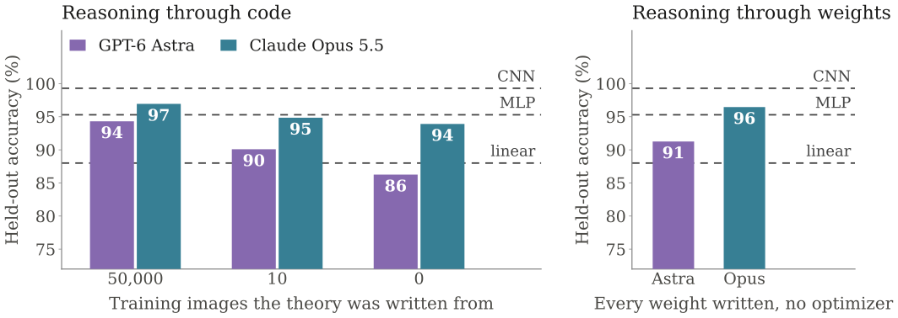
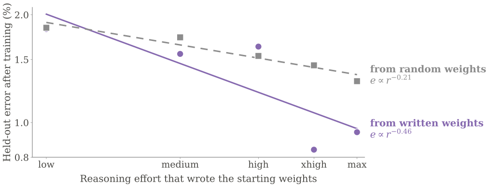
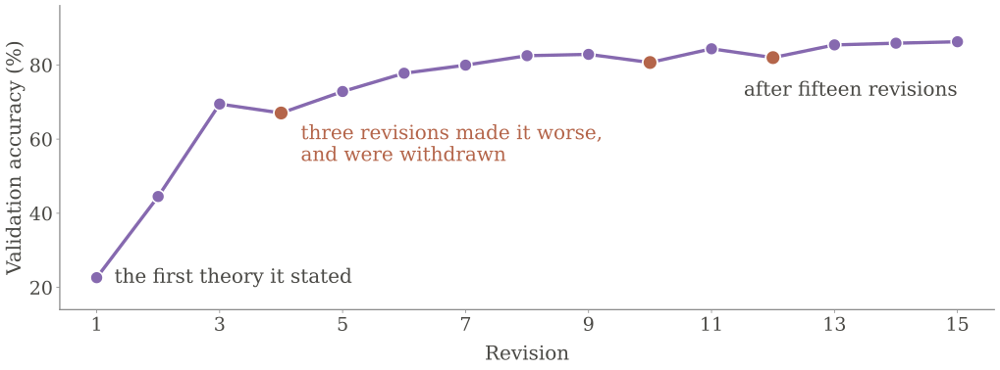
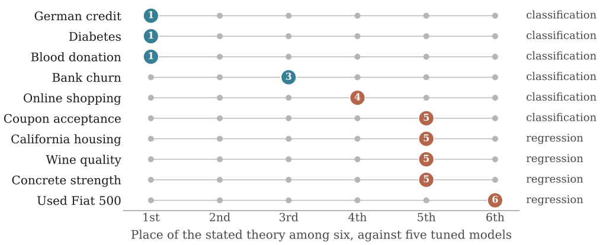
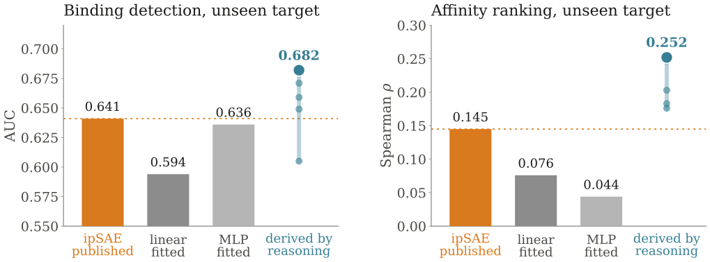
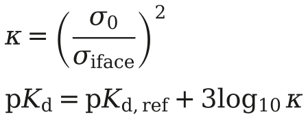
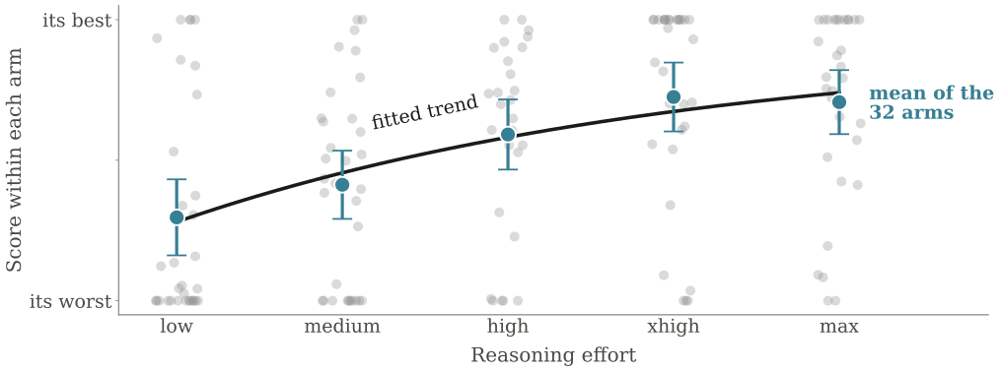

Science deduces the world from first principles, and revises a theory where its predictions fail. We ask whether a reasoning model can do the same, and whether its theories generalize better than deep learning.
The framework
The model states a theory instead of fitting one
Train split
Validation split
Test split
Deep learning
Fit parameters by gradient descent
→
Tune and select the checkpoint
→
Evaluate
This work
State a theory, write it as code
→
Read the errors, revise the theory, repeat
→
Evaluate once
Same splits and same test set as the learned models. The theory is frozen as a program before the test split is scored.
The framework
What the model may and may not do
May
Read papers and the web
Measure the training data
Inspect its own errors on validation
May not
Fit parameters to labels
Search automatically over rules
Store training examples
See the test split
The line we draw: a theory can be informed by data, but no number in it is fitted to labels.
Three domains
One framework, three domains, each with a learned competitor
Domain
What the theory has to do
Learned competitor
Handwritten digits, MNIST
Classify digits, then write every weight of a network by hand
Linear classifier, MLP, CNN
Tabular prediction, TabArena
Predict ten tasks from six fields, on fixed splits
Linear, random forest, XGBoost, CatBoost, MLP
Protein binding
Derive a binding score from a structure predictor’s own error estimates
Published ipSAE score, fitted linear model, fitted MLP
Two reasoning models throughout: GPT‑6 Astra and Claude Opus 5.5, each at five reasoning efforts.
Digits · MNIST
With no training images, a stated theory reaches 94%

Held-out accuracy on the 10,000 MNIST test images. Bars are the best of five reasoning efforts. Dashed lines are trained models.
Digits · reasoning as initialization
Written weights become a better starting point as effort rises

GPT‑6 Astra. Same architecture in both arms, then trained by gradient descent. Only the starting weights differ.
Digits · the deduction–abduction loop
The model revises its own theory where it fails
23%→86%
validation accuracy

One GPT‑6 Astra digits session, every revision it made. Each began with a written hypothesis.
Digits · the deduction–abduction loop
Abduce a cause, deduce its consequence, measure
Abduce
Read the errors and propose a cause
→
Deduce
Work out what that cause predicts
→
Measure
Test the prediction on validation
→
Form
Keep what holds, withdraw what fails
One revision from that session, the tenth
Abduce
Some eights fail the closed-loop test because of a tiny gap in the stroke.
Deduce
Tolerating one missing direction should recover them, at a risk to threes.
Measure
Threes read as eights rose from 218 to 1,495.
Form
Hypothesis rejected. The next revision restored the strict test.
Tabular · TabArena
Theories win small medical and credit tables, and lose on regression

Ten TabArena tasks. The best stated theory, ranked against a linear model, a random forest, XGBoost, CatBoost and an MLP, all tuned on the same rows.
Protein binding
Derive a binding score, against one a person published
What it is given
A structure predictor folds two chains together and returns a matrix of predicted aligned error: its own estimate of how sure it is about the placement of each pair of residues. The model gets that matrix and which residues belong to which chain.
What it is not given
Coordinates, sequences, per-residue confidence and every published score are withheld by what is staged, not by instruction. The fitted references train on sixty summary features of the same matrix.
What it is up against
ipSAE, a recent and well-regarded score a person reasoned their way to and published. Plus a linear regression and an MLP fitted to the same matrix.
Turning a predicted-error matrix into a number that says whether two chains bind is an open problem.
Protein binding
On a target it never saw, the derived rule beats the published score

704 designed binders. Both panels hold out an entire target, so the score is applied to a protein no session worked from. The column of points is the five reasoning efforts.
Protein binding
The stated theory, in the model’s own terms
Treat the bound complex as a harmonic well. Equipartition makes the interface stiffness the inverse square of its fluctuation, and a stiffer well is a deeper one.
Dividing by the binder’s own internal error removes the predictor, and the units with it. Association confines six rigid-body degrees of freedom, each worth half the thermal energy times the log of the stiffness.

It never counts a contact, so it does not grow with the size of the interface.
It has no free parameter. The published score has a cutoff a user chooses.
The factor of three is six rigid-body degrees of freedom halved. It is not chosen.
Protein binding
How grounded is that, honestly?
Step
Status
Why
Equipartition relates stiffness to fluctuation
Correct
Standard statistical mechanics
Six degrees of freedom, halved, gives the factor of three
A real derivation
The counting is right and the units work out
A stiffer well is a deeper one
An assumption
True only for a well of fixed shape, and it sets the sign of the whole expression
Predicted aligned error stands in for a thermal fluctuation
A substitution
It is a network’s estimate of its own error, so the ratio is a ratio of model confidence
The strongest evidence is the predicted sign: the theory says the reference must be the binder’s own error, and it works on the binder and inverts on the target. That is a prediction the account made before it was tested.
A result we removed
On measured structures, the names alone were enough
What the probe was given
Spearman ρ
The names of the two partner proteins, and nothing else
0.382
Buried interface area alone, unfitted physical baseline
0.354
The best derived rule, from the structure
0.516
A probe with no structure at all, only the two names, outscored the physical baseline. Six of the twenty-five programs had been passing partner names to the model at run time.
So we cannot attribute the derived rule’s advantage there to the derivation. The result is off the poster and off the page.
SKEMPI, 25 frozen programs, mean across five held-out families. The designed-binder results are unaffected.
Scaling reasoning effort
More reasoning produces better theories, with large scatter

All 32 arms across the three domains. Each arm uses its own metric, so each is normalized to its own range.
The pattern
The boundary is a property of the field, not the model
Stated theories do well
where the mechanism has been written down somewhere, and the data are few.
Digits from no training images
Small clinical and credit tables
Binding on an unseen target
Fitted models do well
where the signal lies in interactions nobody has described, and the data are plentiful.
Every regression task we ran
Convolutional networks on images
Large commerce tables
And it is visible before you run the experiment.
The hypothesis
As reasoning improves, we will develop stronger first principles in the theory-poor, data-rich domains where deep learning currently dominates.
Deep learning dominates exactly the domains where nobody has yet written the first principles down. We expect models to supply those principles, and stated theories to take over where fitted predictors hold now.
Discussion
Where I want the group to push
Contamination
These models have read the literature of every domain we test. Recall and derivation are not fully separable, and the separation is worst where the result is most striking.
Statistics
Held-out counts in the protein work are small, nothing is bootstrapped, the initialization result is two seeds in one family, and an effort setting is not a measure of compute.
What would move it
A domain with real physics and no literature to recall. Suggestions welcome, and that is the main thing I want out of today.
Frozen framework, program and full research log for every run, including the ones that failed.